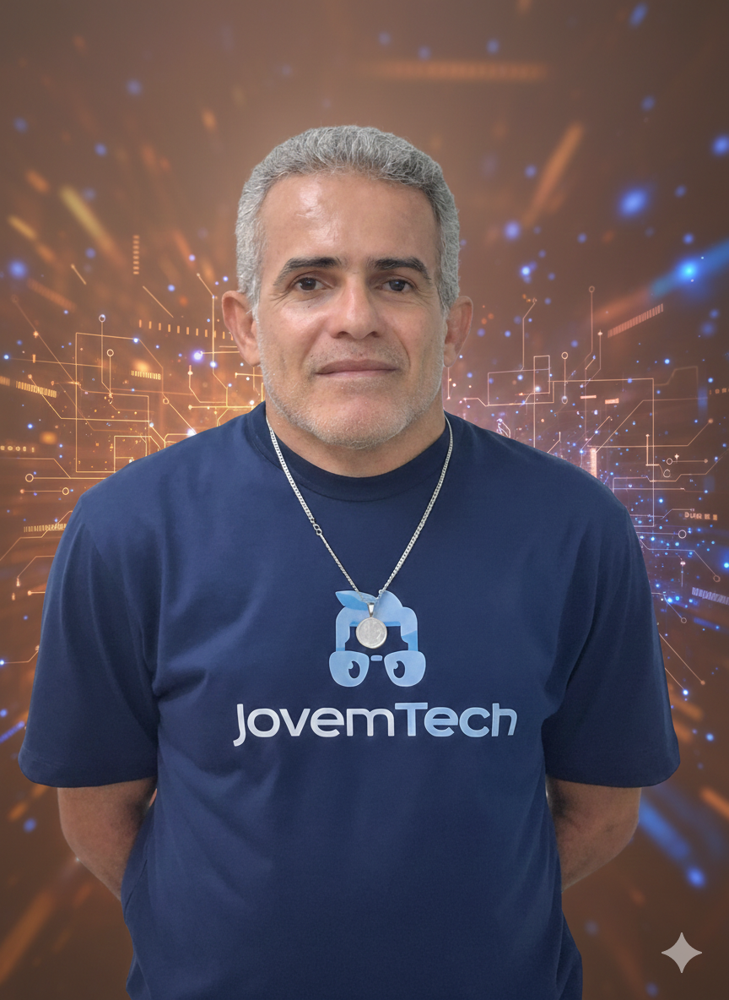

Sobre Mim
Além do interesse por programação e tecnologia, faço parte do Movimento Escoteiro, onde participo ativamente de ações de voluntariado, projetos sociais e atividades voltadas para a cidadania, trabalho em equipe e responsabilidade social. Tenho forte conexão com a natureza e com a vida ao ar livre, valores que influenciam diretamente minhas escolhas pessoais. Sou ciclista e utilizo a bicicleta como principal meio de transporte, buscando reduzir impactos ambientais e adotar um estilo de vida mais sustentável. Também procuro evitar o uso de materiais descartáveis, mantendo uma postura consciente em relação ao meio ambiente.
Olá! Meu nome é Sergio Pitanga. Sou estudante da área de tecnologia e este portfólio reúne alguns dos meus principais projetos e atividades desenvolvidas durante meus estudos. Aqui você encontrará trabalhos com HTML, CSS, JavaScript e lógica de programação, que demonstram minha evolução, dedicação e interesse em aprender cada vez mais. Estou em constante aprendizado e aberto a novos desafios para desenvolver minhas habilidades e crescer profissionalmente na área de tecnologia.
